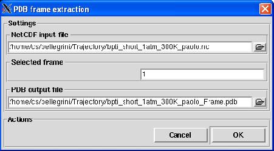

Next: Convert NetCDF to ASCII
Up: The File menu
Previous: VASP to MMTK
Contents
Frame snapshot
The Frame snapshot option allows the extraction of one or several frames in PDB format from a MMTK NetCDF
trajectory. Clicking on it, the dialog shown in figure 4.12 will pop up.
Figure 4.12:
The dialog used to export trajectory frames to a PDB file.
|

|
To perform the frame extraction, the following input fields must be filled:
- NetCDF input file
Format: string
Default: None
Description: a MMTK NetCDF trajectory file of the system must be provided for the extraction.
If a trajectory is currently loaded, it will be proposed by default for the frame extraction.
- Selected frames
Format: integer or Python expression or string
Default: 1
Description: this field will store the frames selected for extraction. The format for the Selected frames
field can be:
- an integer specifying the index of a single frame to extract
- a valid Python expression that will generate a list of integers where each integer specify the index of a frame to extract.
- a string with the following format:
min 1:max 1:skip 1 sep ... sep min N:max N:skip N
where sep can be a white space, a comma or a semicolon and each block min i:max i:skip i will specify a
range of frames including frame min i to frame max i by jump of skip i frames.
- PDB output file
Format: string
Default: None
Description: this field will store the name of the PDB output file that will contain the extracted frames. The line
REMARK Frame i
will be written before each written frame i.
Next: Convert NetCDF to ASCII
Up: The File menu
Previous: VASP to MMTK
Contents
pellegrini eric
2009-10-06